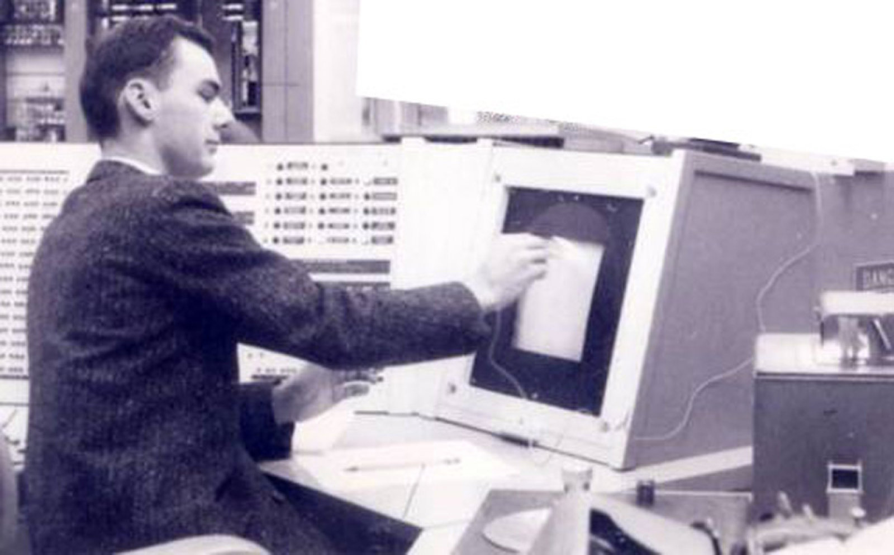

Från dess tidigaste början på papper och i briljanta sinnen har Internet alltid varit en framväxande teknologi och ett framväxande ideal. Vad som följer är en selektiv och utvecklande kronologi över några av de viktigaste händelserna i den kulturella och tekniska utvecklingen av cyberrymden och internet.
1960-1970-talet: ARPANET
Internet skapat av det amerikanska försvarsdepartementet Advanced Research Projects Agency (ARPA). Det första kända fullt fungerande paketväxlingsnätverket, ARPANET, designades för att underlätta kommunikation mellan ARPA-datorterminaler under det tidiga 1960-talet. Även om idén bakom ARPANET började så tidigt som 1962, äffade den första stabila länken mellan flera datorer genom ARPANET 1969, tio år efter att de första konceptuella nätverksarkitektoniska modellerna initierades oberoende av Paul Baran och Donald Davies.
Fig.1 - Amerikanska försvarsdepartementet Advanced Research Projects Agency (ARPA).
1962-1963: J.C.R. Licklider
Arbetar vid Institute of Technology (MIT), J.C.R. Licklider skrev en serie PM om teoretiska nätverksstrukturer. Hans koncept av ett galaktiskt nätverk föreställde sig ett världsomspännande datornätverk där datorterminaler skulle vara länkade till varandra, vilket ger alla som har tillgång till en terminal möjlighet att komma åt och skicka information till andra datorer och användare.
Fig.2 - Licklider.
1959-1964: distribuerad kommunikation
Paul Baran, ingenjör vid den militära tankesmedjan RAND, utvecklade en konceptuell modell för kommunikation som kallas distribuerad kommunikation, med utgångspunkt från ett intresse för kommunikationsnätverkens överlevnadsförmåga i händelse av en sovjetisk kärnvapenattack. modeller för kommunikation överför kommunikation från en ursprungspunkt till en lokal nod och sedan vidare till mottagaren eller till en nationell nod om samtalet skulle behöva gå till en mottagare utanför det regionala området. I denna typ av kommunikationsramverk skadar eliminering av regionala eller nationella noder hela nätverket allvarligt, vilket gör kommunikation nästan omöjlig.
I Barans distribuerade kommunikationsmodell skulle kommunikation gå från ursprungspunkten och sedan till en av många olika kopplingsnoder snarare än en enda regional eller nationell nod. Detta skulle möjliggöra säkrare kommunikation om en given nod skulle elimineras eftersom det fortfarande skulle finnas flera noder och vägar för en kommunikation att röra sig över.
Fig.3 - Paul Baran.
1965: Länkar samman två datorer
Det första nätverksexperimentet som länkar samman två datorer äger rum mellan TX-2-datorn av Lincoln Labs och Q-32 stordator som drivs av RAND-företagen System Development Corporation. Det är första gången som två datorer direkt kommunicerade med varandra.
Fig.4 - Länkar samman två datorer.
1966: Konceptet med paketväxling
Kort efter att ha kommit till ARPA 1966 publicerade Lawrence Roberts en plan för ARPANET som använde konceptet med ett datornätverk utvecklat av J.C.R. Licklider och MIT-forskaren Leonard Kleinrock som först undersökte konceptet med paketväxling där block av data (eller paket) kunde skickas över ett länkat nätverk av noder på ett sådant sätt att nätverksnoder kunde fördröja dirigeringen av datapaketen och skicka dem vidare till andra noder. ARPANET hyvlades och byggdes med den första noden av ARPANET installerad vid UCLA Network Measurement Center 1969 följt av noder vid Stanford Research Institute, University of California i Santa Barbara och University of Utah.

Fig.5 - Lawrence Roberts.
1970: Första radionätverket
Det första radionätverket som använder sig av slumpmässig paketöverföring, Alohanet, lanseras vid University of Hawaii
Fig.6 - University of Hawaii.
1972: Robert Kahn
Robert Kahn ställer ut den första offentliga demonstrationen av ARPANET vid den internationella datorkommunikationskonferensen. Denna offentliga demonstration är också första gången som elektronisk post (e-post) ställs ut och är en viktig katalysator för att öka intresset för att utveckla nätverksteknologi. De första e-postprogrammen som heter SNDMSG och READMAIL är skrivna av Ray Tomlinson och markerar början på en av de mest använda applikationerna idag.
Fig.7 - Robert Kahn.
1973: TCP/IP
Robert Kahn, programledare för ARPAs Information Processing Techniques Office (IPTO), och Vinton Cerf (då doktorand vid Stanford University) arbetade tillsammans på idén om att utveckla internetarbete. Kahn och Cerf hjälpte till att utveckla ett nätverksprotokoll som skulle tillåta en öppen arkitektur för flera nätverk att sammanfogas. Detta protokoll dök senare upp som Transmission Control Protocol/Internet Protocol eller TCP/IP. Detta nya protokoll skulle göra det möjligt för varje enskilt nätverk att stå ensamt så att om ett annat nätverk skulle slås ner, skulle det inte orsaka kollaps av alla anslutna nätverk. Dessutom skulle det nya protokollet som designats av Kahn och Cerf inte involvera någon övergripande global chef och skulle sammanfoga olika nätverk genom vad som senare skulle kallas routrar och gateways. Efter att det ursprungliga TCP/IP-protokollet skrevs, skulle det som uppstod som Internet bli resultatet av pågående experiment och TCP/IP skulle uppstå som ett nästan universellt värdprotokoll som Internet skulle byggas på. År görs de första internationella anslutningarna till ARPANET med tillägget av University College of London och Royal Radar Establishment i Norge.
Fig.8 - TCP/IP.
1973-1975: Ethernet
När Robert Metcalfe arbetade på Xerox Palo Alto Research Center, utvecklar Robert Metcalfe ett system som ersätter radioöverföring av nätverksdata med en kabel som ger en större mängd bandbredd, vilket möjliggör överföring av miljontals bitar av data per sekund i jämförelse med tusentals bitar per sekund när du använder en radiokanalsöverföring. Detta system är ursprungligen känt som Alto Aloha-nätverket men som senare var känt som Ethernet. Metcalfe skulle senare lämna Xerox för att grunda 3Com.
Fig.9 - Ethernet.
1982-1983: Domännamns- systemet
ARPANET är uppdelat i två separata enheter: MILNET för att tjäna det nationella försvarets och det militära samhällets behov och ARPANET som främst används av akademiker och forskare. Detta är det första steget mot kommersialiseringen av Internet. Den inofficiella födelsen av Internet inträffar när både ARPANET och Defense Data Networks börjar använda TCP/IP-protokollet. Efter en ökning av antalet användare och nätverk som är anslutna till Internet börjar datavetare överväga nya metoder för att namnge och adressera användare och nätverk. Domännamnssystemet, som först definierades av Paul Mockapetris, Jon Postel och Craig Partridge, skapas för att dela upp Internetnamn mellan värdnamn (x.com) och användarnamn (användare@x.com). Denna metod för namngivning gjorde underhållet av värdinformation mer hanterbart. ARPA skapade sex domäner som initialt bestod av: edu (educational), gov (regering), mil (militär), com (kommersiell), org (andra organisationer) och net (nätverksresurser).
Fig.10 - Domännamnssystemet.
1990: URL och HTML
Berners-Lee, Robert Cailliau och andra CERN-forskare börjar skapa den första faktiska inkarnationen av World Wide Web. Berners-Lee och hans kollegor utvecklade ett delat format för hypertextdokument som fick namnet markup language eller HTML . Förutom HTML skapade Berners-Lee och andra en enhetlig resurslokalisator (URL) som ett standardadressformat som kunde specificera vilken dator som riktas mot och vilken typ av information som efterfrågas. URL och HTML ökade avsevärt möjligheten till interaktion mellan användare och nätverk över Internet. URL gjorde också olika Internettjänster som Usenet News tillgängliga för alla användare som använder systemet.
Fig.11 - URL och HTML.
1995: Microsoft Windows 95, Java
Bill Gates författare till det nu berömda memo, The Coming Internet Tidal Wave. År 1995 dirigerades huvuddelen av USA:s internettrafik genom sammankopplade nätverkstjänsteleverantörer och Microsoft Windows 95 lanseras. 1995 visar sig vara ett händelserikt år i bildandet av den samtida internetkulturen eftersom det också
den officiella lanseringen av onlinebokhandeln Amazon.com,
internetsökmotorn Yahoo,
auktionssajten Ebay,
webbläsaren Internet Explorer av Microsoft
och skapade av Sun Microsystems av programmeringsspråket Java som möjliggör programmering av animationer på webbplatser som ger upphov till en ny nivå av internetinteraktivitet.
Fig.12 - Bill Gates.
1999: Internetmusik och piratkopiering
Början av kontroverser om internetmusik och piratkopiering uppstår med introduktionen av Napster fildelningsprogram av Shawn Fanning, en universitetsstudent. Under samma år stöter Internet på det första skadliga dataviruset som automatiskt kan kopiera och skicka sig till alla e-postadresser som finns i en infekterad användares adressbok.
Fig.13 - Napster-Network.
2000: Internet- revolutionen
2000 skulle gå till internethistorien när internetbubblan uppstod och brast. Det året var närvaron av internetkonsumentföretag utbredd och synlig i vardagen, inklusive synligheten för .dotcom-företag som betalade miljontals dollar för halvminutersannonser som sänds under Super Bowl. år 2000 marscherar internetrevolutionen vidare med Googles uppgång för att bli världens största sökmotor och den första officiella instansen av internetröstning som äger rum i USA under ett demokratiskt partis primärval i Arizona.
Fig.14 - dot_com_bubble.
2003: Spam
Uppkomsten av spam; oönskade skräppostmeddelanden börjar stå för över hälften av alla e-postmeddelanden som skickas och tas emot. Även om den amerikanska kongressen antar lagstiftning mot skräppost, kvarstår plågan av oönskad e-post.